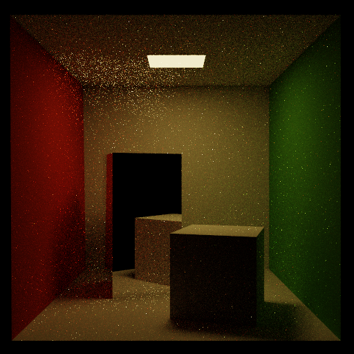
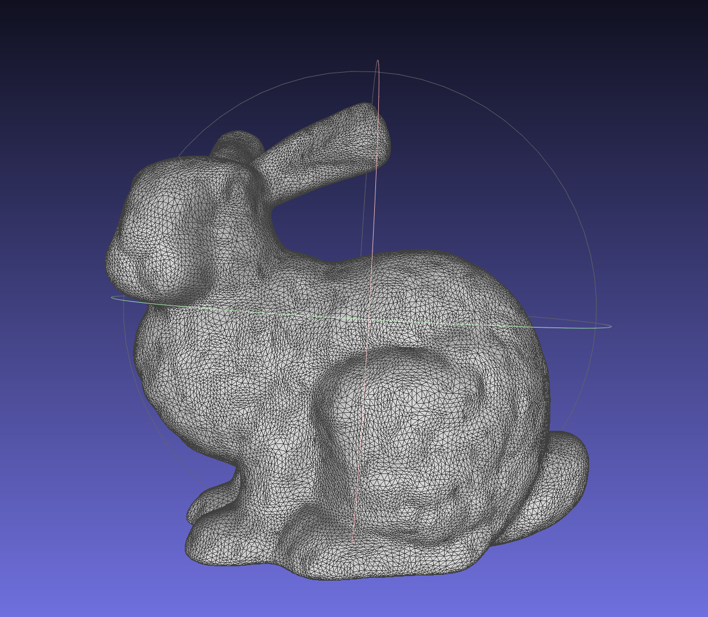

I am a 4th year undergraduate student at Brown University studying Computer Science and Economics.
Within computer science, I am especially interested in visual computing and machine learning. I also spent the last two summers working on the DirectML team at Microsoft. In my free time, I enjoy painting, sculpting, and hiking!
| Summer 2020 | Software Engineer Intern I worked on the DirectML team at Microsoft on a new backend for TensorFlow 1.15 using DirectML. I implemented the kernels for RNNs, including LSTMs, GRUs, and variations of the two. The code is now open-sourced here: TF-DML |
| Summer 2019 | Explore Intern I worked on the DirectML team at Microsoft in both software and product manager positions in a team with 2 other interns. I worked with my team to create a tool for converting ONNX models to DirectML API calls. As a PM, I spoke with customers and scoped and designed the project. I then coded the project in C++. |
Below are some of the projects I worked on as part of CS2240: Interactive Graphics last year!
|  |  |
I do research in the Brown Visual Computing Lab with Professors Tompkin and Ritchie.
See more here!Contact me at: meiqi_wu@brown.edu